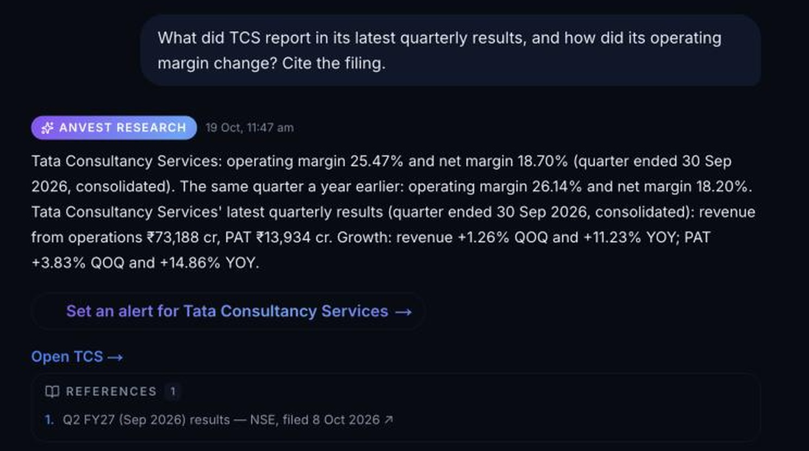

Research teams move between exchange filings, summary screeners, spreadsheets and backtest tools. Machine-readable filings can still have period and tagging problems; many disclosures also arrive as scanned PDFs.
Anvest's ingestion pipeline has recovered 15,899 cash-flow rows from malformed XBRL and flagged 3,608 conflicting figures across 1,022 companies. A production audit counted 6,155,194 indexed passages across 633,688 distinct document IDs on 20 Oct 2026.
Filing answers link to their evidence; unsupported coverage is stated. Deterministic code performs calculations.
Anvest combines filing citations, screening, costed backtests and paper workflows in one product. A review of public product pages on 19 Oct 2026 was directional, not a hands-on benchmark; a feature not shown publicly is not assumed unavailable.
Pre-revenue. Built in 12 months without outside capital. The 20 Oct snapshot has 31 registered accounts, 418 logged research rows across 16 accounts and 238 saved backtest records; these totals include founder/testing activity and other internal activity. Separately, revenue and PAT extraction matched 50 of 50 consolidated Q2 FY27 NSE XBRL filings; this is not an AI-answer accuracy score.
Harsh Bhardwaj, Founder & CEO: IIT Guwahati; Senior Engineering Lead on production multi-agent LLM systems; seven years in distributed backends (New Relic, Shiprocket, Weave, JLR). Currently employed; full-time on Anvest from round close.
Proposed CCD/CCPS, subject to counsel. First close $%%ROUND_FIRST_K%%K; room to $%%ROUND_MAX_K%%K. Team $%%U_TEAM%%K (%%U_TEAM_SHARE%%%) · compliance & infrastructure $%%U_COMP%%K (%%U_COMP_SHARE%%%) · growth & founder $%%U_GROW%%K (%%U_GROW_SHARE%%%) · reserve $%%U_RES%%K (%%U_RES_SHARE%%%). RA work and public evaluation remain targets.